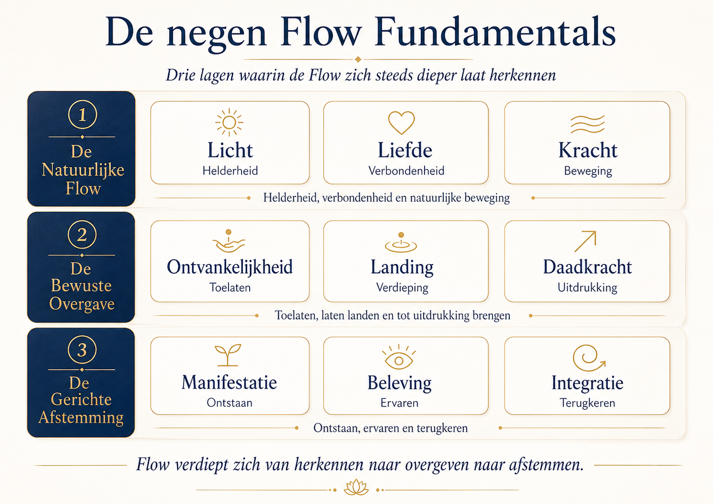
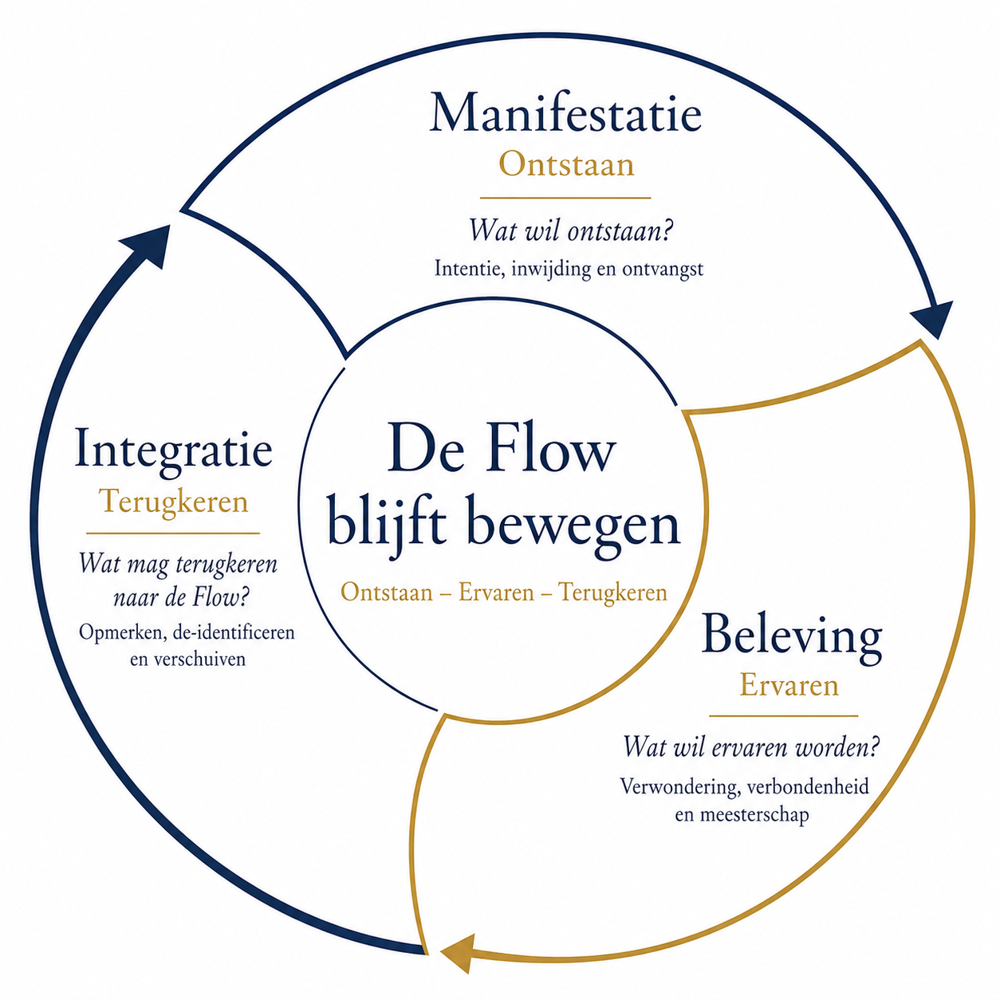
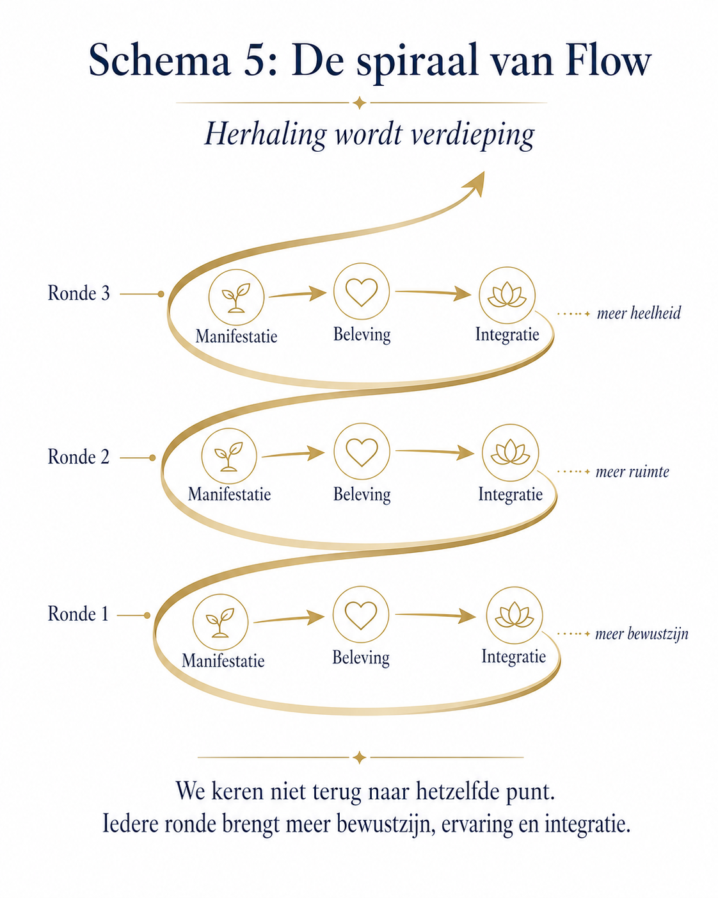
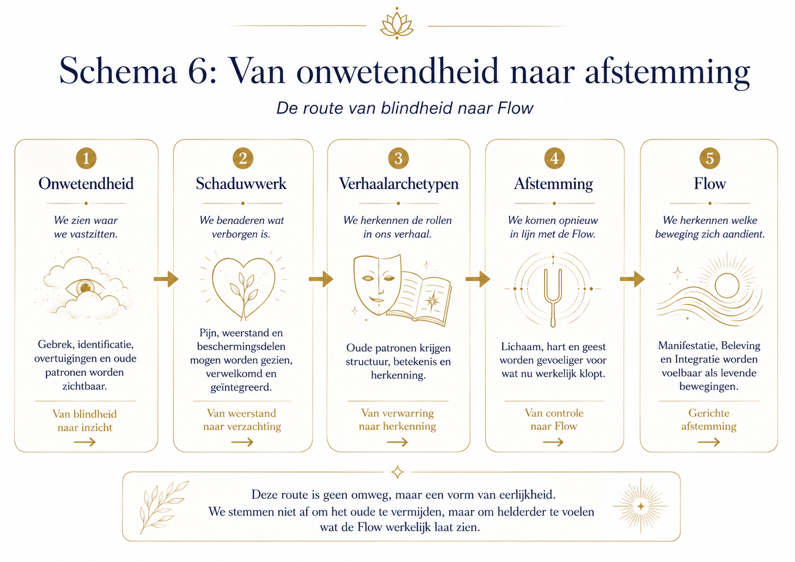
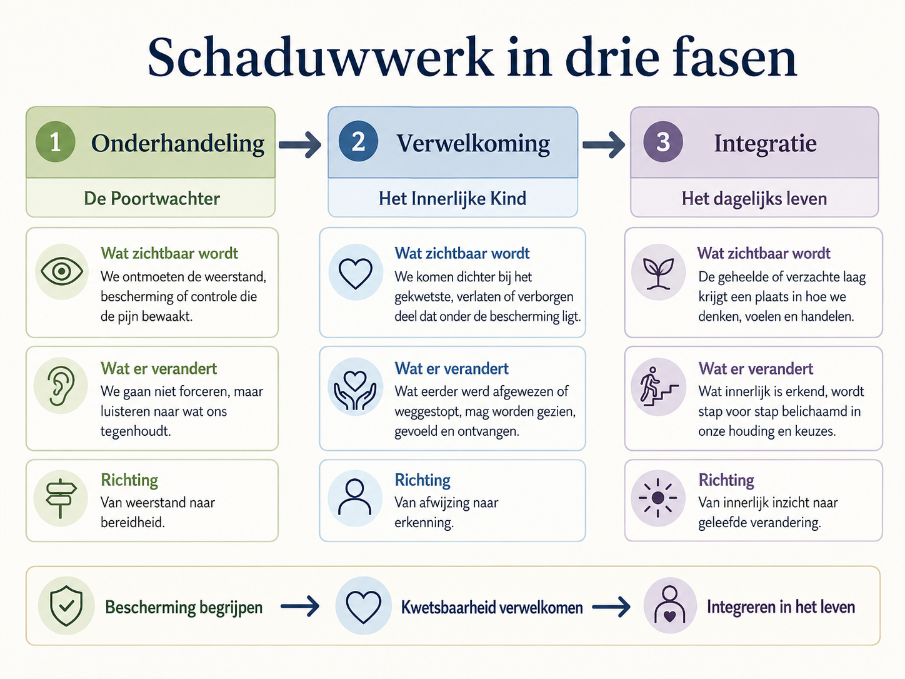
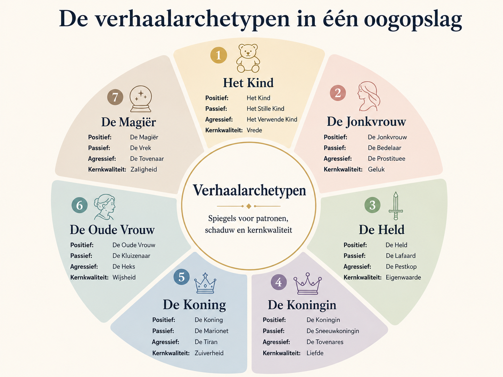
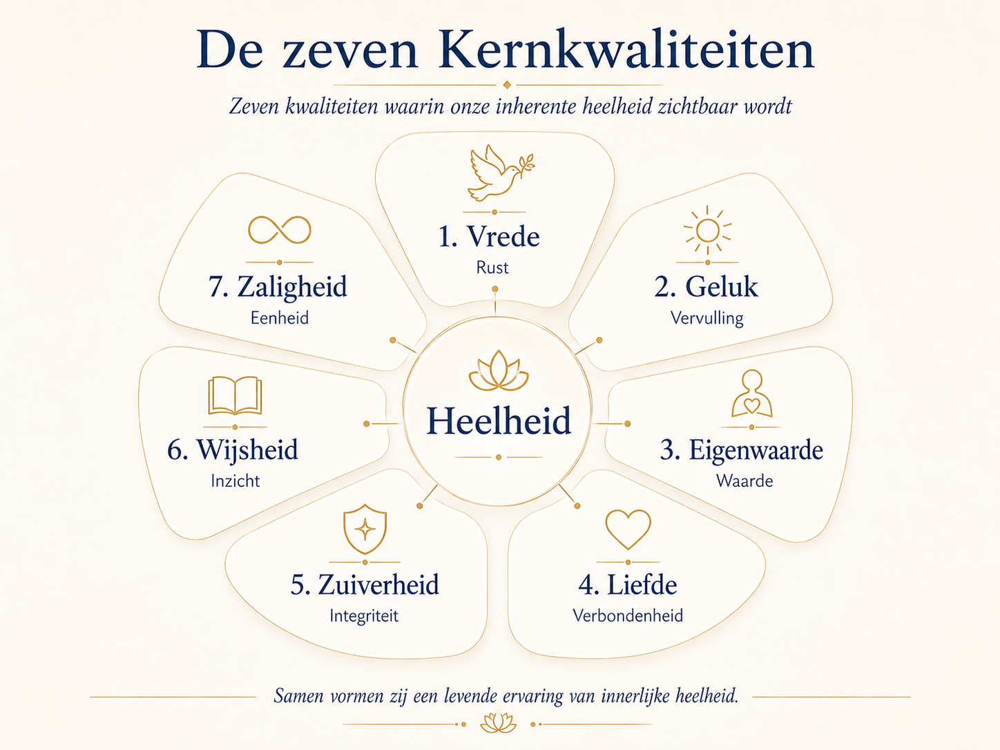

De Natuurlijke Flow
Licht, Liefde en Kracht laten zien hoe helderheid, verbondenheid en beweging vanzelf kunnen samenwerken.
Een spirituele landkaart
Flow Fundamentals is geschreven voor zoekers die veel hebben geprobeerd, maar voelen dat echte verandering niet ontstaat door nóg een methode. Het begint bij herkennen welke beweging zich aandient.
Soms wil iets ontstaan. Soms wil iets werkelijk beleefd worden. Soms wil iets ouds geïntegreerd worden.
Waarom dit boek
Veel zoekers verzamelen jarenlang kennis, technieken en inzichten: meditatie, loslaten, overgave, zelfonderzoek, manifestatie en schaduwwerk. Alles kan waardevol zijn, maar dezelfde methode werkt de ene keer wel en de andere keer niet.
Flow Fundamentals laat een andere weg zien. Niet de perfecte formule staat centraal, maar het herkennen van de juiste beweging. De Flow laat zich niet afdwingen door een stappenplan. Zij beweegt volgens haar eigen ritme, timing en omstandigheden.
Wat Flow Fundamentals is
Het boek helpt ons zien hoe Flow zichtbaar wordt wanneer lichaam, hart en geest opnieuw gaan samenwerken. Soms is de Flow natuurlijk aanwezig. Soms vraagt zij om bewuste overgave. En soms is gerichte afstemming nodig wanneer diepere patronen, schaduw of identificatie actief zijn.
De hoofdlandkaart
Drie lagen waarin de Flow zich steeds dieper laat herkennen: van natuurlijke Flow naar bewuste overgave en gerichte afstemming.

Licht, Liefde en Kracht laten zien hoe helderheid, verbondenheid en beweging vanzelf kunnen samenwerken.
Ontvankelijkheid, Landing en Daadkracht tonen wat opent wanneer controle verzacht.
Manifestatie, Beleving en Integratie helpen herkennen welke grotere beweging zich aandient.
Voor wie
Dit boek is voor mensen die:
Landkaarten
Deze eerste websiteversie toont een selectie van de belangrijkste schema’s. Later kan dit worden uitgebreid met een aparte landkaartenpagina.






Boekstatus
Het boek is geschreven en wordt klaargemaakt voor de volgende stap. Deze website groeit mee als thuisbasis voor het boek, de landkaarten en toekomstige video’s.
Blijf op de hoogteZij wordt herkenbaar wanneer lichaam, hart en geest opnieuw leren meebewegen met wat al aanwezig is.
Terug naar boven ↑